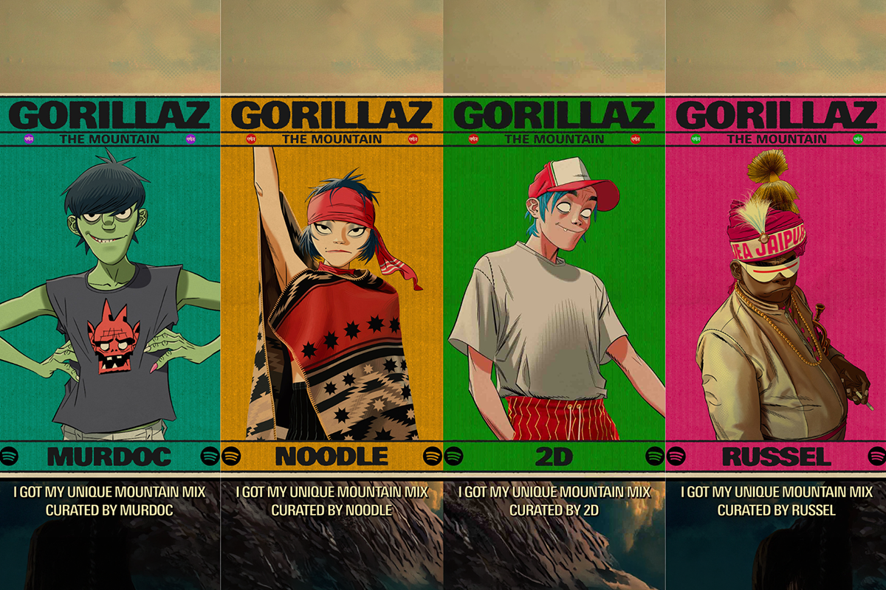
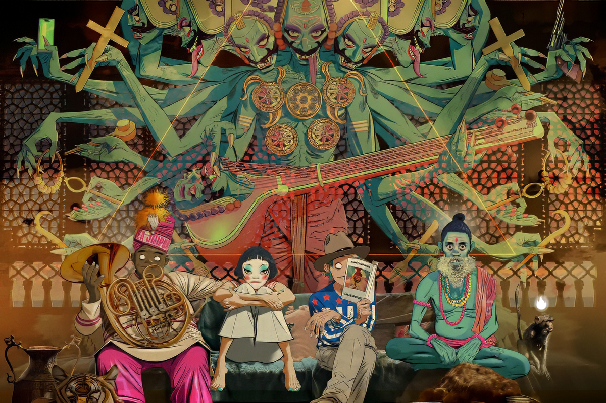
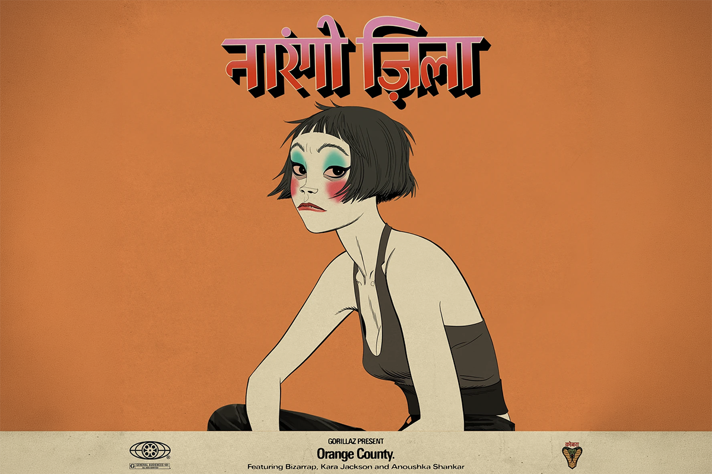

Review: Gorillaz – ‘The Mountain’, escalando la montaña del sonido
Un recorrido espiritual hasta la cima
Un recorrido espiritual hasta la cima

El noveno álbum de estudio de la banda virtual Gorillaz, creada por Damon Albarn y Jamie Hewlett, se titula The Mountain y nos invita a recorrer los rincones más experimentales del sonido y del world music. Todo esto, tres años después del lanzamiento de su último material musical.

Varias cosas han cambiado desde los inicios de la banda y su efervescente popularidad de los 2000, década que es considerada como su peak en cuanto a reconocimiento y, no olvidemos, hits radiales.
Sin embargo, no son pocos los fans que se quedaron en esos años y que siguieron paso a paso la carrera del grupo, sus cambios de sonido, sus innovadoras colaboraciones y las nuevas historias donde 2-D, Murdoc, Russel y Noodle son protagonistas.
The Mountain cuenta con nada menos que 15 canciones donde podemos escuchar 5 idiomas diferentes, en lo que termina siendo un luminoso y espiritual espectáculo de poco más de una hora de duración. Una suerte de continuación a lo que fue su álbum Plastic Beach (2010).

Quizás porque este es el primer trabajo bajo Kong, sello independiente fundado por los mismos actores tras el grupo, que las libertades sonoras se observan con mayor notoriedad. Destacamos igualmente que este álbum también es el resultado de un recorrido importante por la India, cuya huella sonora marca con claridad cada track de este disco.
Con las libertades que un sello propio establece, es que los lugares de grabación para The Mountain también fueron variados. Entre los lugares donde se ensambló este álbum podemos encontrar diferentes ciudades en Inglaterra, India y Estados Unidos, lo que también suma a este engranaje de posibilidades en la producción.
El álbum abraza la instrumentalización y los arreglos tradicionales y autóctonos. Juega con el world music, acercándose mucho más a ese estilo que a los sonidos más característicos de la banda, como el synth pop, el funk o la electrónica, aunque aún podemos seguir escuchándolos acá.
En este nuevo trabajo también encontramos a una cantidad importante de invitados. Entre ellos se incluyen los legendarios Paul Simonon (un habitual en la discografía del grupo) y Johnny Marr. También colaboran músicos autóctonos de India como Ajay Prasanna en flauta, Anoushka Shankar en el sitar y Amaan Ali Khan en el sarod, pero también aparecen otros artistas latinoamericanos, como los argentinos Trueno y Bizarrap.
Ahora, alejándonos de los datos duros, bueno sería indagar más profundamente en las canciones que componen esta notable pieza musical. Podemos empezar con algunas de las canciones que precedieron a este lanzamiento, como The Happy Dictator, The God of Lying y The Manifesto las que, de una u otra forma, son una pincelada más bien superflua de lo que va el álbum. Por la experimentación y el perfecto equilibrio entre esta nueva etapa de Gorillaz y sus trabajos pasados, es que creo que The Manifesto, que cuenta con la colaboración de Trueno y Proof, debe ser de los grandes exponentes de The Mountain.
Quizás porque se divide musicalmente en dos partes diferentes, en una disección clarísima y con distintas vibras, es que The Manifesto, con más de 7 minutos de duración, se siente como un viaje divino. Los versos de cada rapero se contraponen de manera exquisita, tanto en flow como en musicalización. El verso del fallecido Proof es eléctrico, jazzy, ácido y directo, completamente distanciado de la colorida primera parte del track, donde Trueno solo se ve interrumpido por un Albarn dulce, encargado de un coro que es como un juego de niños.
Lo de The God Of Lying, colaboración con IDLES, es para aquellos que gustan de los Gorillaz de antaño, acercándose con furia a los primeros álbumes del grupo. En esa misma línea clásica, también recomiendo The Plastic Guru y Delirium
Para quienes buscan la diferencia, o lo que se acerca más a la experimentación y al world music que se llevó a cabo en exclusiva para este trabajo, recomiendo las canciones The Mountain, The Moon Cave, Damascus (una de mis favoritas indiscutidas), The Sweet Prince e incluso The Manifesto.

Ahora, me estoy dando la libertad de elegir un highlight aleatorio del álbum, y ese tendría que ser Orange County, single que se lanzó un mes antes de que el álbum viera la luz. Un twist al sonido del dolor, una transformación con tintes mayores y nostálgicos, una hermosa oda a quienes ya no están con una perspectiva tan sensible en su optimismo musical, que no hace más que llenarte el corazón.
Espiritual y político a la vez, The Mountain
confirma que Gorillaz sigue encontrando nuevas formas de reinventarse más de dos décadas después de su debut, demostrando que su capacidad para mezclar estilos, narrativas –y ahora también culturas– sigue siendo uno de los proyectos más notables en su trayectoria.
 Cultura
CulturaSé que suena raro hablar de calor extremo mientras en Chile todos están buscando la parka más gruesa del clóset.
 Cultura
CulturaEl hecho de que estemos entrando al mes de julio no se puede creer. Pero lo que tampoco se puede creer es la cantidad de artistas que han…
 Cultura
CulturaCuando hablamos de trabajos clásicos de la música chilena, siempre se nombran los discos de Violeta Parra, Víctor Jara, Los Jaivas o…